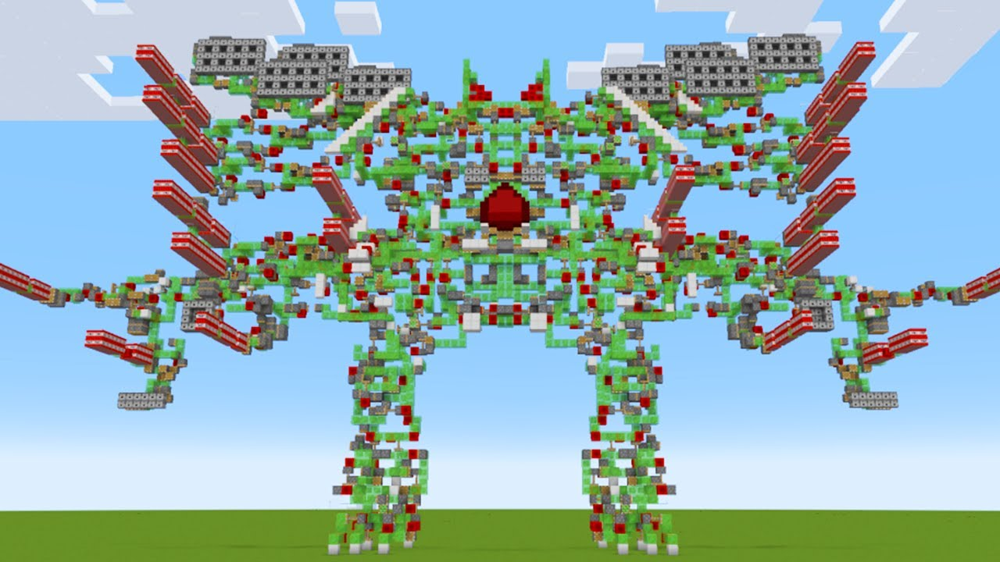
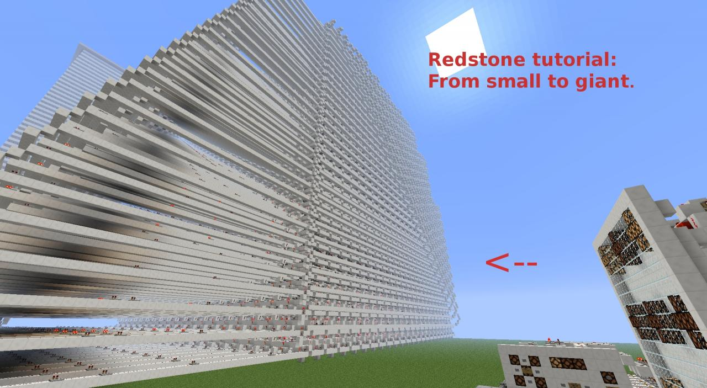
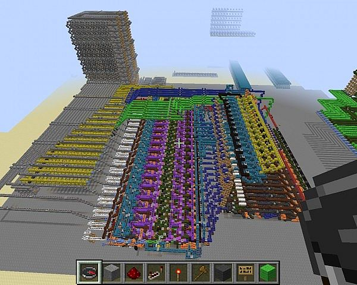
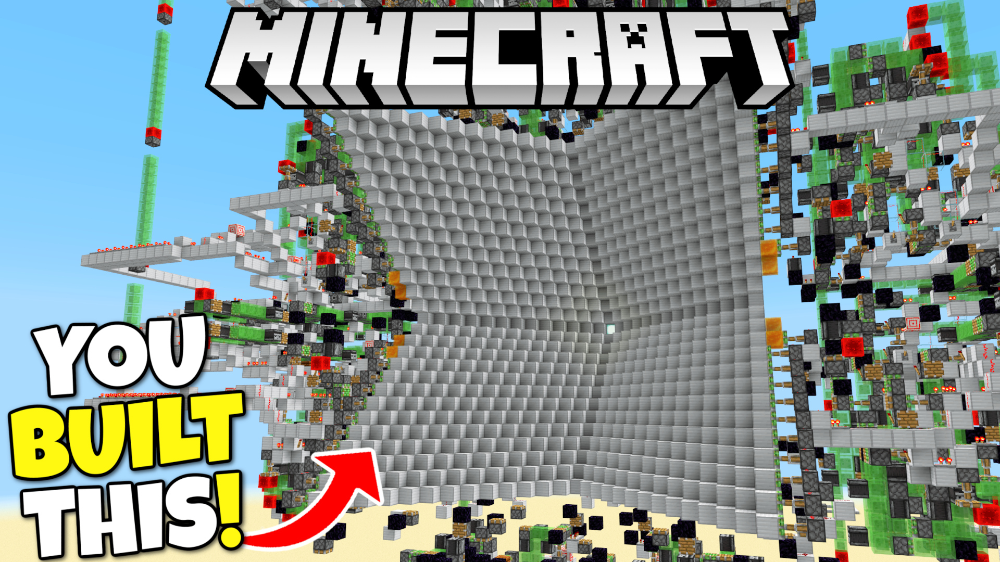

Redstoneriai
Redstoneriai „Minecraft“ žaidime yra žaidėjai, kurie specializuojasi „Redstone“ mechanikose – tai sistema, leidžianti kurti įvairius mechanizmus, panašius į elektros grandines. Jie dažniausiai koncentruojasi ne į pastatų grožį, o į jų funkcionalumą. Redstoneriai kuria automatinės fermas, slaptas duris, spąstus, liftus ar net sudėtingus kompiuterius žaidimo viduje.



Įspudingi projektai
Minecraft bendruomenėje yra sukurta daugybė įspūdingų redstone projektų, kurie parodo, kiek daug galima pasiekti naudojant žaidimo mechanikas. Vieni žaidėjai yra sukūrę veikiančius skaičiuotuvus, kiti – net paprastus kompiuterius ar žaidimus pačiame Minecraft pasaulyje. Pavyzdžiui, yra projektų, kuriuose galima žaisti tokius žaidimus kaip „Tetris“ ar „Pac-Man“, sukurtas vien tik iš redstone grandinių.
Vienas žinomiausių „redstonerių“ yra Mumbo Jumbo, kuris garsėja savo išradingais ir dažnai labai sudėtingais mechanizmais. Jis kuria įvairias automatinės fermas bei slaptas bazes. Jo vaizdo įrašai padėjo daugeliui žaidėjų geriau suprasti redstone veikimą ir jo galimybes.
Kitas įspūdingas kūrėjas yra ilmango, kuris labiau orientuojasi į techninius sprendimus ir maksimalų efektyvumą. Jis kuria itin našias fermas ir sistemas, kurios gali automatiškai rinkti didelius kiekius resursų. Tokie projektai dažnai reikalauja ne tik kūrybiškumo, bet ir labai gero žaidimo mechanikų išmanymo.
Taip pat verta paminėti SethBling, kuris yra sukūręs vienus sudėtingiausių redstone projektų, įskaitant veikiančius procesorius ir net dirbtinio intelekto eksperimentus Minecrafte. Jo darbai parodo, kad Minecraft gali būti naudojamas ne tik kaip žaidimas, bet ir kaip platforma sudėtingoms technologinėms idėjoms įgyvendinti.
